七段結局比較
包含結局內容。HD已獲核准並接入開發版，現行v.1.0.2發行包保持。原版與重製均為受控場景，不代表正常通關或整頁原版parity。
驗收與限制 來源清冊
第0段
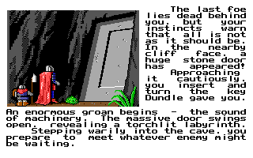
原版 DOS，受控執行，320×200 正式重製 EGA，繁體中文，960×600
正式重製 EGA，繁體中文，960×600 本批開發版 HD，繁體中文，1920×1200
本批開發版 HD，繁體中文，1920×1200第1段
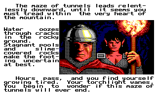
原版 DOS，受控執行，320×200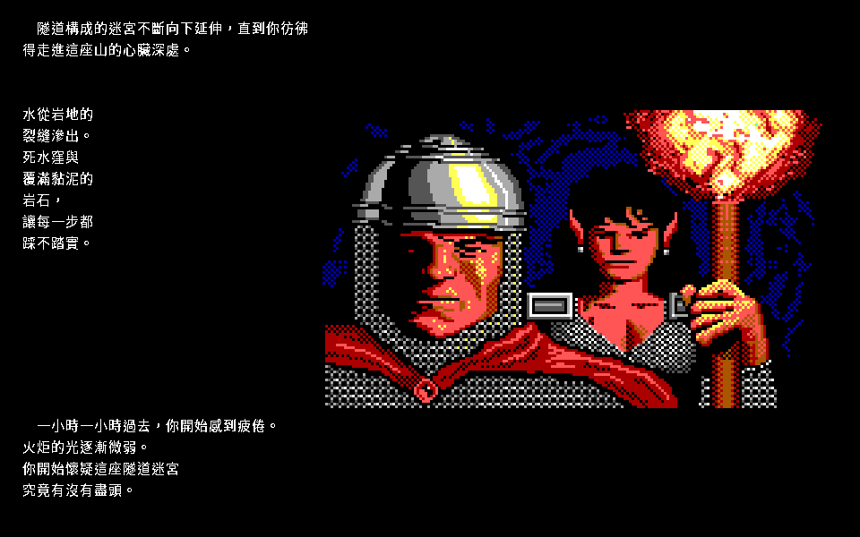
正式重製 EGA，繁體中文，960×600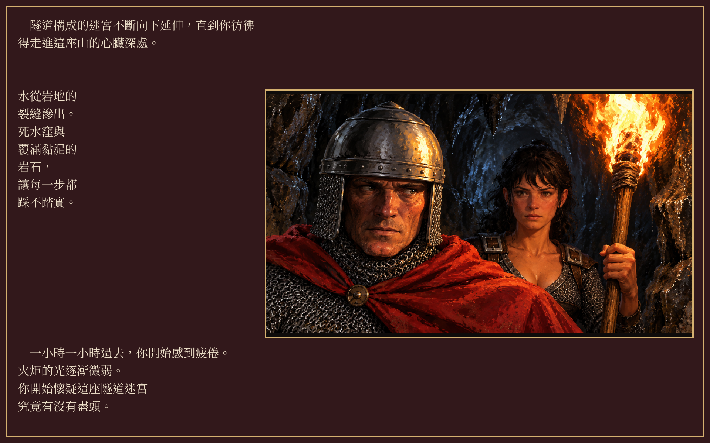
本批開發版 HD，繁體中文，1920×1200第2段
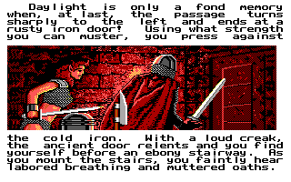
原版 DOS，受控執行，320×200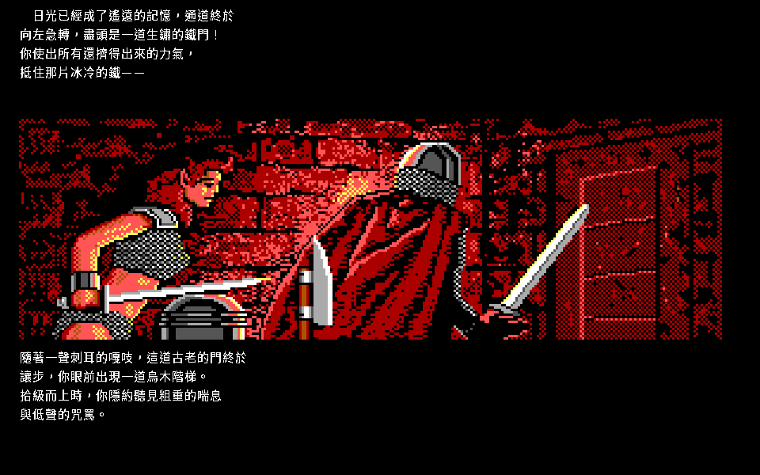
正式重製 EGA，繁體中文，960×600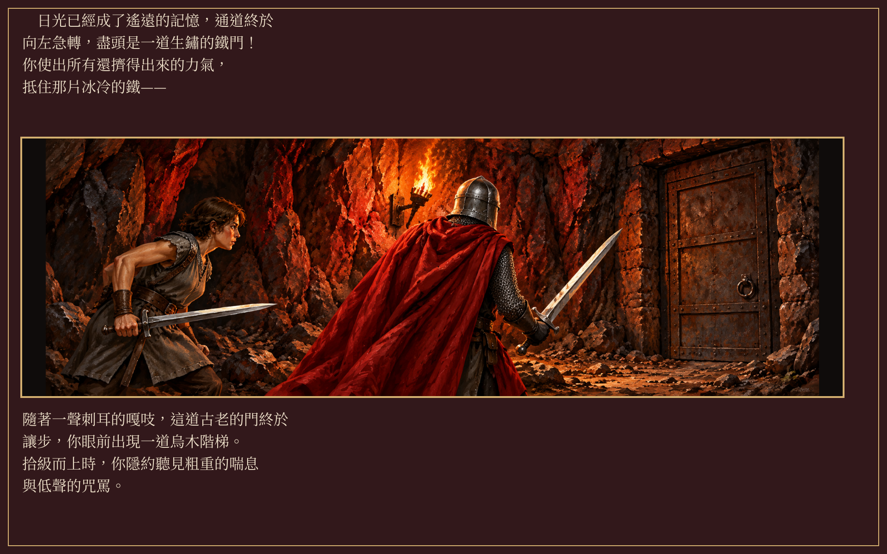
本批開發版 HD，繁體中文，1920×1200第3段
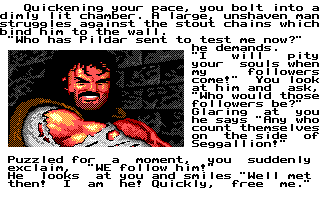
原版 DOS，受控執行，320×200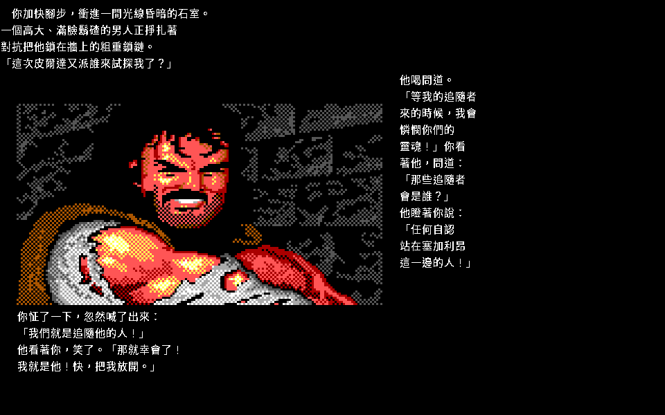
正式重製 EGA，繁體中文，960×600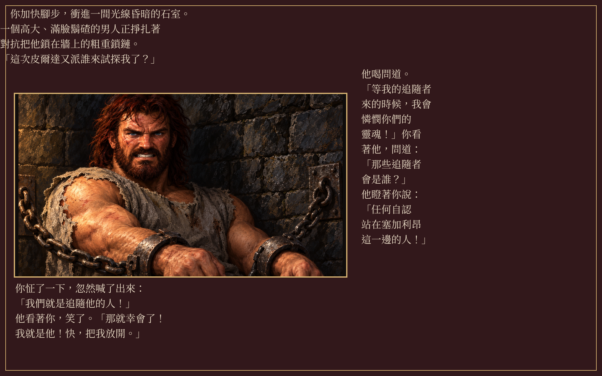
本批開發版 HD，繁體中文，1920×1200第4段
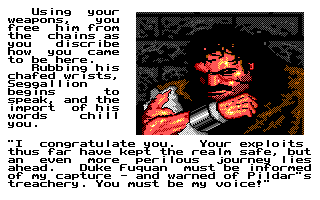
原版 DOS，受控執行，320×200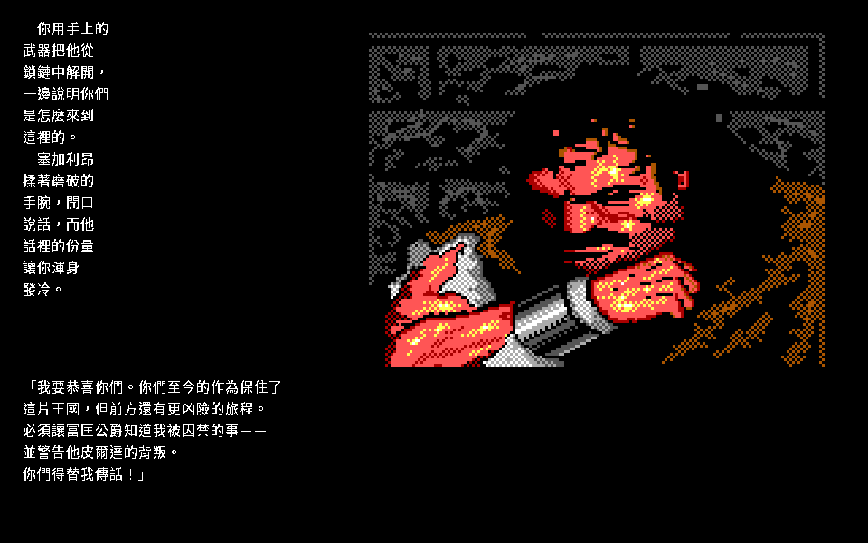
正式重製 EGA，繁體中文，960×600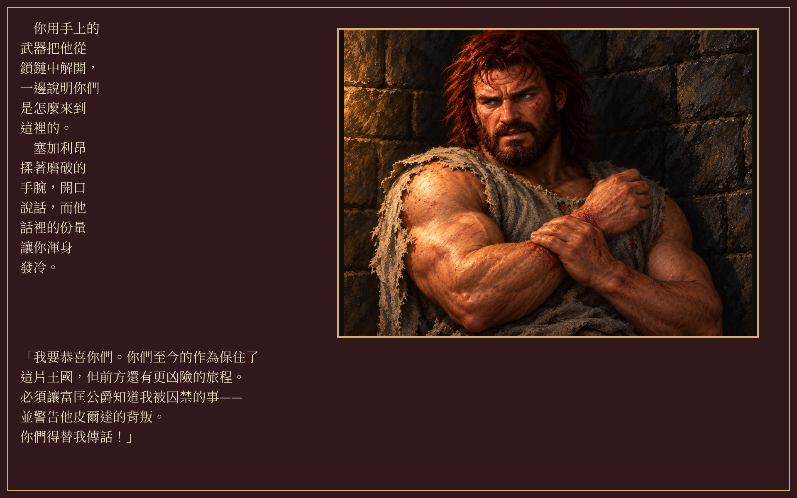
本批開發版 HD，繁體中文，1920×1200第5段
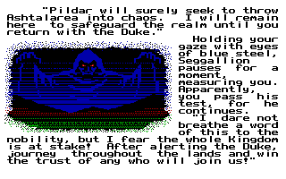
原版 DOS，受控執行，320×200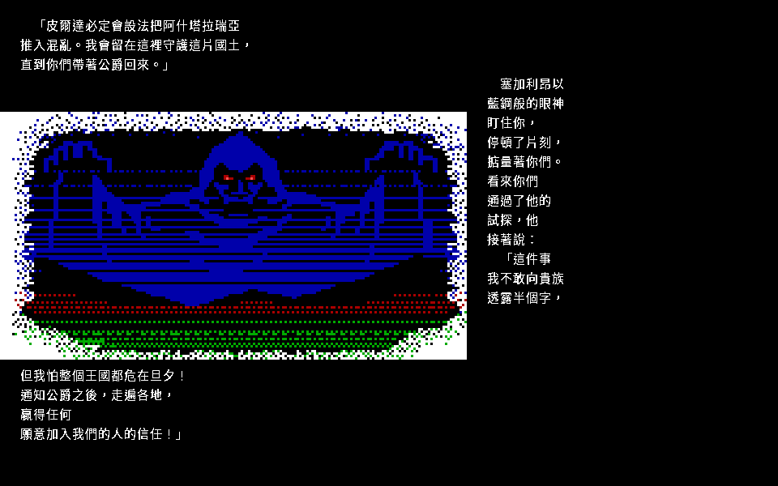
正式重製 EGA，繁體中文，960×600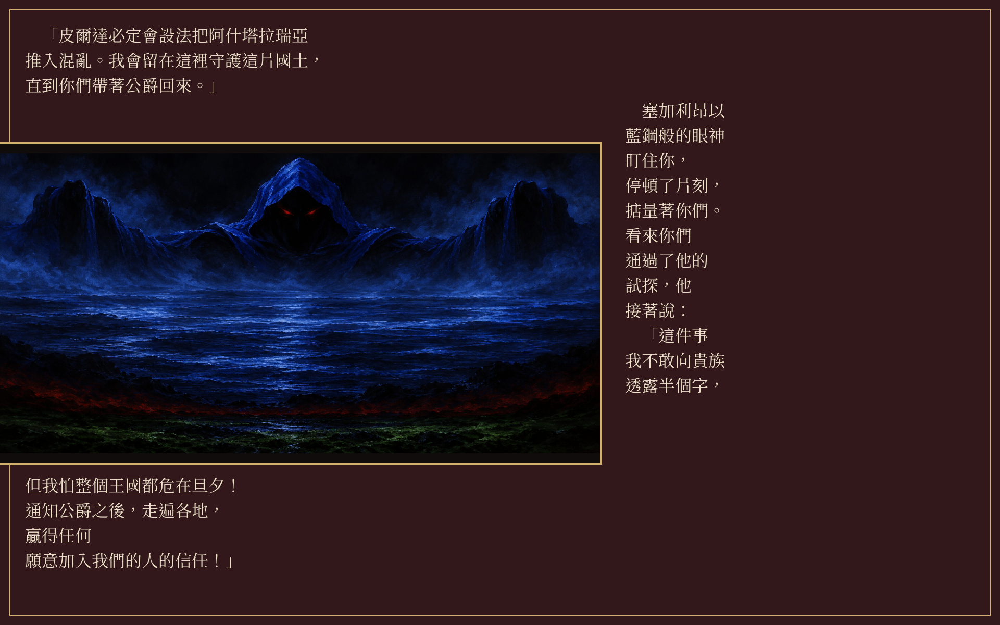
本批開發版 HD，繁體中文，1920×1200第6段
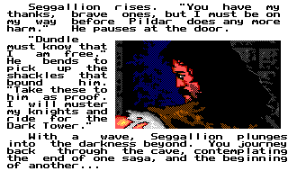
原版 DOS，受控執行，320×200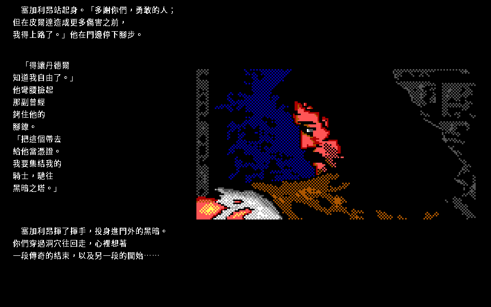
正式重製 EGA，繁體中文，960×600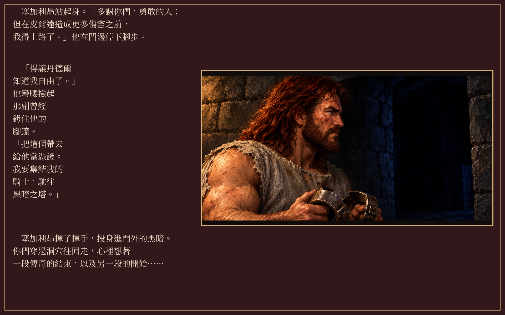
本批開發版 HD，繁體中文，1920×1200